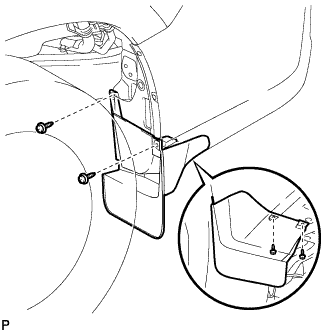
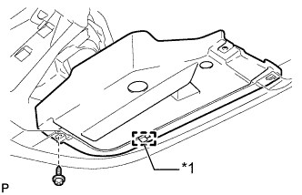

HEIGHT CONTROL DRYER > REMOVAL |
| 1. DISCONNECT CABLE FROM NEGATIVE BATTERY TERMINAL |
| Condition | Waiting Time |
| Vehicle enrolled in G-BOOK system | 6 minutes |
| Vehicle not enrolled in G-BOOK system | 1 minute |
| 2. REMOVE REAR WHEEL LH |
| 3. REMOVE REAR QUARTER PANEL MUDGUARD SUB-ASSEMBLY LH |
|  |
Remove the 4 screws and rear quarter panel mudguard.
| 4. REMOVE REAR BUMPER PROTECTOR LH |
 |
Remove the clip, 2 screws and rear bumper protector.
| 5. REMOVE HEIGHT CONTROL COMPRESSOR COVER |
Remove the 3 clips and height control compressor cover.
| 6. REMOVE REAR BUMPER PROTECTOR SUB-ASSEMBLY LH |
|  |
Remove the screw.
Detach the guide and remove the rear bumper protector.
| *1 | Guide |
| 7. REMOVE HEIGHT CONTROL FILTER |
Slide the 2 clips and disconnect the 2 hoses.
 |
Remove the 2 bolts and height control filter from the height control compressor bracket.
| 8. DISCONNECT NO. 2 HEIGHT CONTROL TUBE |
Disconnect the No. 2 height control tube from the No. 2 height control valve (Click here).
| 9. REMOVE HEIGHT CONTROL COMPRESSOR ASSEMBLY |
Disconnect the connector.
Detach the 3 clamps.
Detach the No. 2 height control tube.
 |
Disconnect the connector.
Detach the clamp.
 |
Remove the 3 bolts and height control compressor.
| 10. REMOVE HEIGHT CONTROL DRYER ASSEMBLY |
 |
Disconnect the No. 2 height control tube (Click here).
Remove the bolt and height control dryer from the height control compressor.
Remove the O-ring.